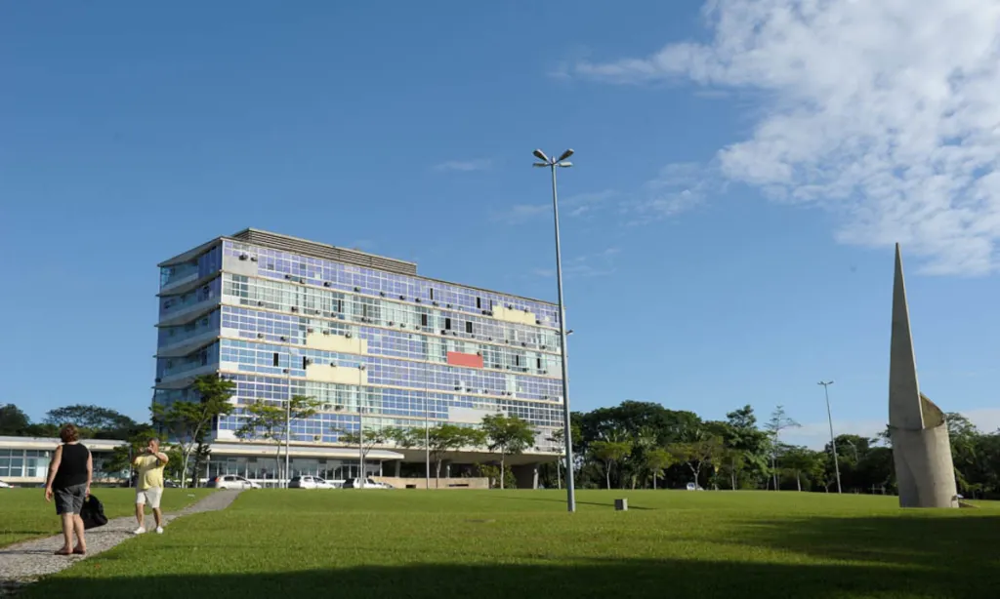

Una necesidad de la pandemia movilizó a diferentes sectores en torno a una misma solución: desarrollar una alternativa al alcohol en gel. A partir de la articulación de NanoBrasil, la UFMG, Anvisa y Drogarias Araújo se conectaron en diferentes etapas que llevaron a POOF, antiséptico a base de nanocobre, de la idea al mercado.
Durante la pandemia de COVID-19, el alcohol en gel pasó a formar parte de la rutina de prevención. Pero el uso frecuente también trajo algunos problemas, como resequedad e irritación de la piel. Fue en este escenario que NanoBrasil identificó una oportunidad: usar el nanocobre, que tiene propiedades antimicrobianas, para desarrollar una alternativa al alcohol en gel.

“Percibimos que había un gran problema en el uso del alcohol en gel por sus propias características. Es inflamable, altamente tóxico y causa resequedad en la piel. Y notamos que nuestro nanocobre podía resolver eso”, explica Oscar Geigner, director comercial de NanoBrasil.
La oportunidad encontró una demanda concreta cuando un fondo de inversiones buscó a NanoBrasil, interesado en crear una solución disruptiva frente al alcohol en gel y llevarla al mercado. A partir de ahí, el desafío dejó de ser solo tecnológico: era necesario entender qué producto desarrollar, cómo posicionarlo y qué socios serían necesarios para viabilizarlo.
El mercado antes que el producto
El análisis de mercado fue una de las primeras etapas del proyecto. En lugar de partir directamente hacia la formulación, NanoBrasil buscó entender cómo esa solución podría entrar en un mercado ya dominado por el alcohol en gel.
La investigación indicó que, aunque el nanocobre permitía desarrollar un producto diferente, romper por completo con los hábitos del consumidor podría dificultar su aceptación.
“Para no romper todos los paradigmas, que eran muchos, le pusimos al producto un aroma, un color y mantuvimos su composición en gel”, cuenta Oscar.

La decisión es un ejemplo de cómo el análisis de mercado influyó directamente en el desarrollo. Para NanoBrasil, este diagnóstico inicial también evita que las empresas inviertan en un proyecto sin conocer previamente sus posibilidades.
“Por eso siempre comenzamos el trabajo de I+D haciendo un informe técnico y de mercado, para que nuestro cliente sepa exactamente en qué punto está. No empezar desde cero”, afirma.
Además de señalar características del producto, este trabajo busca mapear posibilidades de negocio. Según Oscar, el análisis sirve para presentar al cliente diferentes rutas posibles para una misma tecnología.

“En términos de mercado, qué resultado puede dar esto y el camino que debe tomar para que este producto funcione. Entonces, entregamos un trabajo absolutamente completo, no solo técnico. No solo un camino: damos 10 caminos en promedio”, explica.
Cuando la idea encuentra a la ciencia
Con la dirección definida, la etapa siguiente fue transformar la propuesta en una formulación. NanoBrasil desarrolló la fórmula y articuló la participación de la Universidad Federal de Minas Gerais (UFMG) en las validaciones de eficiencia microbiológica del antiséptico.

El trabajo avanzó rápidamente ante el contexto de emergencia sanitaria. En cerca de seis meses, la formulación fue desarrollada, abriendo camino para las etapas siguientes.
Una formulación necesita llegar a la industria
Con la solución formulada, el proyecto aún necesitaba superar la distancia entre el laboratorio y la producción a escala. NanoBrasil articuló una empresa para realizar la industrialización y continuó construyendo la cadena necesaria para llevar el producto al mercado.
Este movimiento revela una característica central del proyecto: no había una única empresa responsable de todas las etapas. Con cada nuevo desafío, nuevos actores necesitaban entrar en escena.

Fue el caso de Anvisa. La producción necesitaba pasar por el proceso regulatorio y, durante la pandemia, el contexto de urgencia permitió mayor agilidad en determinados procedimientos.
“Logramos trabajar con Anvisa para liberar esto, que en esa época era más fácil, porque se aprovechaba la urgencia”, relata Oscar.
La articulación regulatoria también formaba parte de una estrategia más amplia. NanoBrasil buscaba caminos para que la solución pudiera avanzar posteriormente hacia el mercado hospitalario, lo que exigiría nuevos permisos y etapas.
De la industria a las manos del consumidor
Con el desarrollo y la producción encaminados, el proyecto llegó a la etapa de comercialización. Drogarias Araújo se sumó como socia para llevar POOF al consumidor.

El resultado fue una cadena que reunió diferentes competencias en torno a una misma solución: GNB, empresa creada por el flujo de inversiones, aportó la demanda para el desarrollo; la UFMG participó en la validación microbiológica; la industria viabilizó la producción; Anvisa integró el proceso regulatorio; y Drogarias Araújo hizo la conexión con el mercado.
POOF llegó a los estantes como un antiséptico en gel desarrollado con tecnología de nanocobre. Según los resultados obtenidos durante el desarrollo, la solución presentó acción antimicrobiana y capacidad de eliminar el 99,9% de los virus presentes en las manos, además de eficacia contra virus relacionados con la COVID-19 y la mpox.
El próximo paso: llevar la tecnología aún más lejos
La historia de POOF muestra que, entre una necesidad identificada y una solución disponible en el mercado, existe una secuencia de decisiones que va mucho más allá del desarrollo tecnológico.
En el proyecto, NanoBrasil actuó conectando las competencias necesarias en cada etapa y, al mismo tiempo, utilizando información técnica y de mercado para orientar los caminos posibles.
Esta lógica también abre nuevas posibilidades para POOF. Con una base ya desarrollada y validada, la tecnología puede servir como punto de partida para nuevas aplicaciones en productos y mercados, como soluciones para la salud, la limpieza, las pinturas y los tejidos.
“El mercado hospitalario es el camino que queremos seguir con POOF. La idea es ampliar la aplicación de esta tecnología y transformar esta base en nuevas soluciones para el área de la salud”, afirma Oscar Geigner, director comercial de NanoBrasil.
Más que un producto desarrollado para responder a una necesidad de la pandemia, POOF puede ser el punto de partida de una nueva serie de aplicaciones. La tecnología que llegó al mercado puede, ahora, abrir camino a nuevas soluciones.